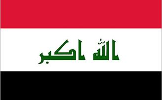
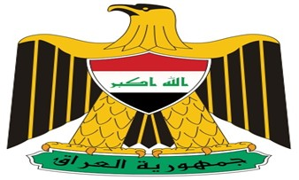

Information on Iraq
|
|
|
| The official name | Republic of Iraq | | Flag | 
| | Logo |  | | President | Fuad Masum | | The Prime Minister | Haider al-Abadi | | National Anthem
| Mawtini | | Capital | Baghdad | | Other major cities | Mosal, Basra, Erbil , Karkok, Babil.
| | Area | 438317 km² | | Geographical location | It’s located in west Asia and It’s partof middle east, Jordan and Syria are to it’s west ,Turkey to It’s north ,Iran to it’s ast and Kuwait and Saudi Arabia to it’s south . | | Population | 33330000 Based on estimations of central of statistics with in the ministryof planning of 2011 for more details... | | Language | The official languages are Arabic and Kurdish see section-4 of Iraqi constitution | | Topography | Iraq is featured by the plains of Tigris and Euphrates, the marshes are to the south east, the mountains are in Kurdistan region at the borders with Iran to the east and turkey to the north | | Climate | The western parts have typical desert climate of extreme heat in the summer and extreme cold in the winter ,while the central and southern parts have a hot summer and a moderate winter | | The Major National Resources | Petrol , Phosphate , Natural Gas and Sulfur | | Currency | Iraqi Dinar | Iraq's provinces
| Baghdad, Mousel,Basrah, Salahddin, Duhok, Erbil, Sulimania, Dyala, Wassit, Missan, Thiqar, Muthana, Babil, karbala, Najaf, Al-qadisiyyah, Anbar, karkuk.
| | Timing | GMT+3.00 | | Internet ID | IQ | | International phone code | 00964 |
|
|